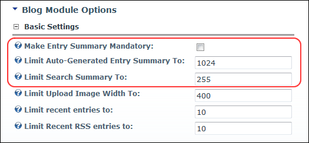
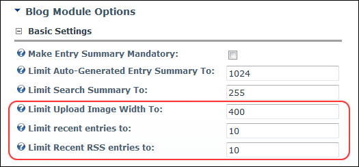
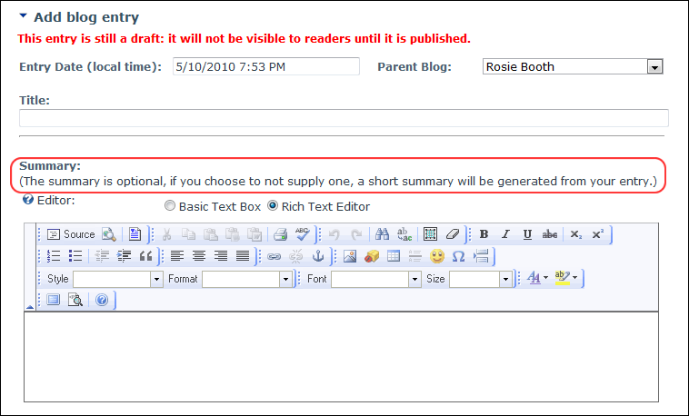

Configuring Basic Settings for the Blog Module
How to configure the basic settings for the Blog module using the View_Blog module.
- Select
 Module Options from the View_Blog module actions menu. This opens the Blog Module Options page.
Module Options from the View_Blog module actions menu. This opens the Blog Module Options page.
- Go to the Basic Settings section.
- At Make Entry Summary Mandatory, select from these options:
- to set the Summary field on the Add Blog Entry page of the View_Blog as mandatory.
- to set the Summary field as optional. This displays the following settings which you may wish to modify.
- In the Limit Auto-Generated Entry Summary To text box, edit the maximum number of characters for the auto-generated summary of blog entries. To set no limit, enter the value 0. The default setting is 1024.
- In the Limit Search Summary text box, edit the maximum number of characters to be returned when a search is made. To set no limit, enter the value 0. The default setting is 255. Note: It is strongly recommended that a limit is set to ensure speedy results for searches.

- In the Limit Upload Image Width To text box, enter the maximum pixel width for images which can be uploaded by bloggers when adding an entry. Larger images can be uploaded, however they will be scaled down to this width. The default setting is 400.
- In the Limit Recent Entries To text box, enter the maximum number of recent entries displayed when a user clicks the View All Recent Entries link on the Blog_List module. The default setting is 10.
- In the Limit Recent RSS Entries To text box, edit the maximum number of recent RSS entries to be displayed. The default setting is 10.

-

Example of the Summary field set as optional when adding a new blog entry
-
See "Configuring Advanced Settings for the Blog Module"